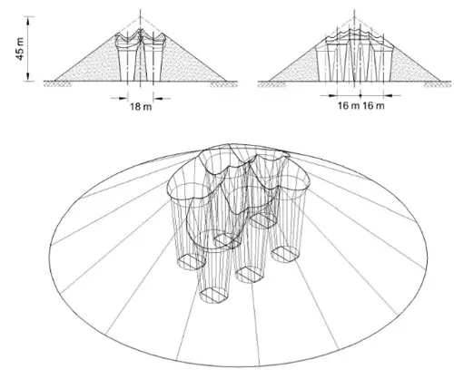

5. Descarga, migración de vacíos y carga viva
Movimiento de la carga
En general, la extracción de material desde un punto de la base de un stockpile genera “vacíos” locales que se propagan hacia arriba a medida que el material circundante migra para ocuparlos. Este proceso crea un movimiento complejo dentro del stockpile, afectando tanto la distribución de la carga como la dinámica de la llamada zona viva.
En un stockpile, se denomina carga viva a la porción del material que participa activamente en el movimiento hacia los puntos de extracción, en contraste con la zona muerta, que permanece relativamente inmóvil. En otras palabras, la carga viva es la que se desplaza y contribuye al flujo hacia la base, mientras que la zona muerta actúa como un reservorio estático dentro del stockpile.
Esta situación se ilustra, para el caso de un stockpile cónico con tres alimentadores por línea de molienda, similar al que modelamos en este proyecto, en la Figura 1. La carga viva se representa mediante prismas cónicos invertidos (o chimeneas) cuya base inferior coincide con los feeders respectivos, extendiéndose hacia la superficie y generando superposiciones de material en movimiento. El mineral fino percola hacia abajo a través de los vacíos generados, mientras que las partículas más gruesas tienden a desplazarse lentamente por rodadura hacia la periferia del cono, generándose un enorme volumen de material que no se mueve (o bien, se mueve muy poco), que es precisamente la zona muerta mencionada con anterioridad.

La gestión de la carga viva es crucial para optimizar la eficiencia del flujo de material dentro del stockpile. Implica monitorear y controlar la distribución del material en movimiento, asegurando que los vacíos generados por la extracción se llenen de manera uniforme y que la zona muerta no se expanda innecesariamente. Una adecuada gestión de la carga viva permite mantener un flujo constante hacia los puntos de extracción, minimizando la segregación de partículas y mejorando la homogeneidad del material descargado.
Los stockpiles son susceptibles de sufrir varios contratiempos debido a la dinámica de la carga viva y su interacción con las zonas muertas. El material puede quedar atrapado en la zona muerta, dificultando su extracción y provocando fluctuaciones en el flujo hacia los alimentadores. Además, la segregación de partículas por tamaño y densidad puede intensificarse, afectando la calidad del material descargado y la eficiencia del proceso de molienda. Uno de los problemas más importantes corresponde a la generación de ratholes, los que son túneles o canales vacíos que se forman dentro del stockpile, impidiendo el flujo uniforme del material y complicando su manejo. Los ratholes producen que el material literamente se hunda dentro de ellos, creando zonas de difícil acceso y aumentando el riesgo de interrupciones en la operación del stockpile, forzando la intervención de maquinaria de apoyo, como bulldozers, con el riesgo de perder el control de la altura de la pila por medio de sensores virtuales.
Regla de descarga
Consideremos los sets de alimentadores \(A_{k}\) y \(B_{k}\), asociados a las líneas de molienda \(A\) y \(B\), donde \(k\) representa el índice del alimentador dentro de cada línea (\(k=1,2,3\)). Si el alimentador \(k\) (independiente de la línea) recibe un flujo másico \(q_{k}\), entonces la fracción de material a retirar de la celda base correspondiente en un paso de tiempo \(\triangle t\) está dada por
\[ \triangle F_{k}=\frac{q_{k}\triangle t}{\rho_{b} V_{c}} \]
donde \(\rho_{b}\) es la densidad aparente del material y \(V_{c}\) es el volumen de la celda base correspondiente. De esta manera, si la celda base contiene menos material del requerido para satisfacer \(\triangle F_{k}\), se retira todo el contenido disponible y el proceso se repite después de que el material superior migre hacia la celda base. Por lo tanto, la propiedad descargada depende no solo del caudal del alimentador, sino también de la distribución espacial del material dentro del stockpile, y se “acumula” en la forma de momento:
\[ d_{\mathrm{out},k}=\frac{\sum_m \triangle f_m d_m}{\sum_m \triangle f_m} \]
donde \(m\) recorre todas las interacciones de descarga que contribuyen al material retirado de la celda base correspondiente. Así, la propiedad descargada refleja un promedio ponderado por la fracción de material retirada en cada interacción. Esto es extremadamente importante a la hora de representar la distribución de propiedades del material descargado de manera precisa: El uso de un promedio simple generaría un sesgo hacia las interacciones que retiran menos material.
Migración del material
La parte II del trabajo original de Ye, Hilden & Yahyaei (2023) hace énfasis en la migración del material dentro del stockpile, describiendo cómo las partículas se redistribuyen desde las celdas superiores hacia las celdas inferiores, llenando los vacíos generados por la descarga y manteniendo la estabilidad del stockpile. En su desarrollo, se propone un modelo probabilístico para la migración del material, donde la probabilidad de que una partícula se desplace desde una celda superior hacia un vacío en la celda inferior depende de la posición relativa y de la geometría del stockpile: Cada salto redistribuye el material de manera estocástica, siguiendo las probabilidades definidas por el modelo.
Designemos una celda vacía como \(c\). Sea \(\mathcal{U}(c)\) el conjunto de celdas superiores adyacentes a \(c\) desde las cuales el material puede migrar hacia el vacío. Cada celda \(u \in \mathcal{U}(c)\) tiene asociada una probabilidad de contribuir al llenado del vacío \(c\), determinada por la geometría y la posición relativa dentro del stockpile. Su selección se realiza conforme la fórmula
\[ P(u\mid c)=\frac{w(u,c)}{\displaystyle \sum_{v\in \mathcal{U} (c)} w(v,c)} \]
donde \(w(u,c)\) es un peso que refleja la probabilidad de que el material migre desde la celda superior \(u\) hacia el vacío \(c\), típicamente decreciente con la distancia horizontal entre \(u\) y \(c\). Esta regla produce una distribución estocástica del material migrante, asegurando que los vacíos se llenen de manera coherente con la geometría y la dinámica del stockpile por medio de la introducción de un volumen de influencia alrededor del vacío.
En este proyecto, se implementa una solución de compactación determinista, donde el material migra desde las celdas superiores hacia los vacíos en las celdas inferiores siguiendo un patrón predefinido, en lugar de un enfoque puramente probabilístico. Esto permite controlar de manera más precisa la redistribución del material y la estabilidad del stockpile. La implementación se realiza en la función remove_from_bottom():
def remove_from_bottom(
state: StockpileState,
north: int,
east: int,
volume_cells: float,
) -> tuple[float, float]:
"""Extrae desde el punto de descarga y migra el vacío hacia arriba."""
# Inicializamos las variables de control para la extracción y migración del
# material.
remaining = volume_cells
removed = 0.0
size_moment = 0.0
# Loop que recorre los niveles de la columna desde abajo hacia arriba,
# extrayendo material hasta completar el volumen solicitado.
for level in range(state.fill.shape[0]):
available = state.fill[level, north, east]
if available <= 0:
continue
moved = min(available, remaining)
removed += moved
size_moment += moved * state.p80_in[level, north, east]
state.fill[level, north, east] -= moved
remaining -= moved
# Introducimos un punto de ruptura si ya hemos extraído todo el
# material solicitado, a modo de tolerancia.
if remaining <= 1e-12:
break
# Compactar la columna es la versión determinista de migración vertical. El
# modelo completo elige vecinos superiores con una probabilidad espacial.
occupied = state.fill[:, north, east] > 0
fills = state.fill[occupied, north, east].copy()
sizes = state.p80_in[occupied, north, east].copy()
state.fill[:, north, east] = 0.0
state.p80_in[:, north, east] = 0.0
state.fill[: len(fills), north, east] = fills
state.p80_in[: len(sizes), north, east] = sizes
return removed, size_moment / removed if removed > 0 else float("nan")La ventaja de esta alternativa determinista es evidente: Garantiza que el material se compacte verticalmente sin necesidad de calcular probabilidades para cada vecino superior, simplificando la simulación y manteniendo la conservación de masa. Sin embargo, también reviste un problema de representatividad importante: No captura la dispersión lateral del material que ocurre en la realidad, lo que puede llevar a subestimar la extensión de la zona afectada por la extracción. En términos simples, no es capaz de reproducir la aparición de ratholes de manera precisa.
Carga viva y zona muerta
Como comentamos previamente, no todo el material acopiado en un stockpile está en movimiento. Parte de él permanece en la zona muerta, mientras que solo el material en la zona viva contribuye al flujo hacia los puntos de descarga.
La zona muerta no participa pues de la recuperación de material durante la operación normal de descarga. Sin embargo, el material que permanece en esta zona no necesariamente se encontrará inmóvil para siempre; en general, cuando existen detenciones prolongadas (y programadas) en el proceso aguas arriba (chancado primario), se espera vaciar completamente el stockpile para “alargar” la continuidad operacional de la molienda todo lo que se pueda, minimizando el impacto productivo en el negocio. Esto motiva el uso de equipos de arrastre de carga, como bulldozers, para mover el material que permanece en zonas muertas hacia los feeders, asegurando su descarga.
En nuestro modelo, la distinción entre zona viva y zona muerta se realiza de manera explícita. Cada celda del stockpile se clasifica según su conectividad con los puntos de descarga y su historial de movimiento. Las celdas que han contribuido al flujo hacia los puntos de descarga al menos una vez se consideran parte de la zona viva, mientras que las que no han participado permanecen en la zona muerta. Esta clasificación permite simular de manera más realista la dinámica del material y la efectividad de las operaciones de arrastre de carga.
La conectividad que describe la dinámica de la carga viva se basa en la capacidad de cada celda para contribuir al flujo hacia los puntos de descarga. Esta conectividad no es estática; puede cambiar con el tiempo a medida que el material se mueve y se reorganiza dentro del stockpile. Por lo tanto, una celda que inicialmente pertenece a la zona muerta puede pasar a la zona viva si logra conectarse con un punto de descarga mediante el movimiento del material.
Representación de funnel flows
Previamente describimos la dinámica de la carga viva por medio de movimientos de flujo con foco en los feeders, y con apertura variable hacia la superficie del cono. Esta geometría, similar a un embudo, recibe el nombre de funnel flow en la literatura especializada.
En los modelos de autómatas celulares para stockpiles, los funnel flows se representan mediante la identificación de celdas activas que contribuyen al flujo hacia los puntos de descarga. Estas celdas forman un canal preferencial dentro del acopio, mientras que las celdas periféricas permanecen en la zona muerta. La dinámica de este canal se captura mediante reglas de migración localizadas que simulan el movimiento del material hacia los puntos de descarga, respetando la conservación de masa y la conectividad de la zona viva.
El paper original de Ye, Hilden & Yahyaei (2023) busca reproducir la dinámica de los funnel flows en stockpiles capturando tanto la formación del canal activo como la persistencia de la zona muerta alrededor de éste. La geometría de este canal tiene un impacto directo en varios aspectos claves del stockpile, como el tiempo de residencia del mineral dentro de él, cómo las distintas capas que lo constituyen se van mezclando, la fracción de carga viva, la distribución granulométrica resultante en cada feeder y la sensibilidad de la superficie del cono a las descargas.
Si un sensor de altura está localizado sobre la superficie del stockpile, puede proporcionar información valiosa sobre la evolución del cono y la dinámica de los funnel flows. Al monitorear los cambios en la altura del material, es posible inferir la formación y el movimiento del canal activo, así como la estabilidad de la zona muerta circundante. Esta información puede ser utilizada para ajustar las operaciones de descarga y optimizar la recuperación del material.
Influencia del número de feeders
La cantidad de feeders en un stockpile influye directamente en la distribución del flujo de material y en la formación de los funnel flows. Con un mayor número de puntos de descarga, es más probable que se desarrollen múltiples canales activos, lo que puede mejorar la eficiencia de la descarga y reducir la acumulación de material en la zona muerta. Por el contrario, un menor número de feeders tiende a concentrar el flujo en canales más estrechos, aumentando la probabilidad de que grandes áreas del stockpile permanezcan en la zona muerta.
Si disponemos de un total de \(N\) puntos de descarga, la descarga total de mineral desde el stockpile se puede expresar como \(q_{\mathrm{out}} = \sum_{k=1}^{N} q_{k}\), donde \(q_{k}\) representa la tasa de descarga a través del \(k\)-ésimo punto de descarga. La disposición geométrica de la distribución determina cómo se forman los canales activos y la extensión de la zona muerta alrededor de ellos. Por lo tanto, si sólo conocemos el throughput por línea de molienda y no la velocidad relativa de cada feeder, debemos optar por una regla de reparto explícita que asigne el flujo total entre los distintos puntos de descarga. Por ejemplo:
- Repartición uniforme entre los \(N\) puntos de descarga.
- Repartición proporcional a la velocidad relativa de cada feeder.
- Inferencia desde corriente o potencia de la correa de alimentación o del molino SAG, con incertidumbre.
- Curva de calibración de velocidad versus flujo másico.
En este proyecto, optamos por la primera opción, es decir, la repartición uniforme entre los \(N\) puntos de descarga, para cada línea de molienda. En términos declarativos, el código fuente del proyecto establece dicha opción en el mismo visor vía TypeScript:
/** Procedencia de las entradas de la corrida.
*
* El reparto del tonelaje entre alimentadores puede venir de las velocidades
* medidas o, si esos tags no estan, de un reparto uniforme entre los que
* figuran en marcha. La diferencia cambia lo que el modelo puede afirmar, de
* modo que se declara aqui en lugar de darse por supuesta en el texto.
*/
export interface InputProvenance {
usedMeasuredFeederSpeeds: boolean;
feedSizeReconstructedMinutes: number;
minutesWithoutRunningFeeder: number;
windowMinutes: number;
}Notemos que, si optamos por “ocultar” la procedencia de las entradas, el consumidor del modelo no podría distinguir entre lo que se midió y lo que se supuso, lo cual puede llevar a interpretaciones incorrectas de los resultados.
Sesgo geométrico
El sesgo geométrico se refiere a la influencia de la posición de los alimentadores y la forma del acopio en la distribución del flujo de material. En particular, los puntos de descarga situados más cerca del borde tienden a interactuar con la periferia del stockpile con mayor frecuencia, lo que puede generar diferencias en la velocidad de descarga y en la formación de zonas muertas. Este efecto es especialmente relevante cuando se considera la segregación radial gruesa del material.
Supongamos que los feeders están dispuestos en filas con radios \(r_{A}\) y \(r_{B}\), respectivamente, respecto al centro del stockpile. Si \(r_{B}>r_{A}\), la fila B interactúa con la periferia con mayor frecuencia que la fila A. Conforme el proceso de segregación radial gruesa avanza, esta diferencia puede amplificarse, afectando la distribución de tamaños de partícula y la dinámica de las zonas muertas. Matemáticamente, esto significa que
\[ \mathrm{E} [d_{\mathrm{out}}^{B}-d_{\mathrm{out}}^{A}]>0 \]
donde \(d_{\mathrm{out}}^{A}\) y \(d_{\mathrm{out}}^{B}\) son las velocidades de descarga en los puntos A y B, respectivamente, y \(\mathrm{E}[\cdot]\) es el operador de valor esperado.
La desigualdad anterior establece una hipótesis sobre el sesgo geométrico: Los puntos de descarga más alejados del centro del stockpile tienden a tener mayores velocidades de descarga en promedio. Naturalmente, tal hipótesis puede fallar en situaciones donde otros factores, como la distribución de finos, la variación de altura del acopio o el funcionamiento irregular de los alimentadores, dominen la dinámica del flujo de material.
Para garantizar que la validación del sesgo geométrico sea consistente, se define la diferencia de velocidades de descarga en un instante de tiempo \(t\) como
\[ \triangle d_{t}=d_{t}^{B}-d_{t}^{A} \]
Esta diferencia permite evaluar el sesgo geométrico en cada instante de tiempo, en lugar de depender únicamente del valor esperado a lo largo de un período prolongado.
Tiempo de residencia
Los stockpiles suelen diseñarse para subvencionar alimentación fresca a la molienda en el supuesto de que el chancado primario esté detenido. Cuando se establece que un stockpile proporciona una capacidad de \(T\) horas de alimentación continua, se espera que el tiempo de residencia medio del material en el acopio sea del orden de \(T\), referido fundamentalmente a la carga viva.
A nivel de modelo, el tiempo de residencia se puede rastrear mediante la edad de las celdas que almacenan el material. Cada celda mantiene un contador de tiempo que se incrementa en cada paso de simulación mientras la celda esté ocupada. Esto permite calcular el tiempo de residencia medio y analizar la dinámica interna del stockpile. Si \(a\) designa la propiedad encargada de almacenar la edad, entonces \(a\) se incrementa en cada paso de simulación para celdas ocupadas:
\[ a_{ijk}\left( t+\triangle t \right) =a_{ijk}\left( t \right) +\triangle t \]
donde \(a_{ijk}(t)\) es la edad de la celda en la posición \((i,j,k)\) en el tiempo \(t\), y \(\triangle t\) es el incremento de tiempo por paso de simulación. De esta manera, la mezcla de mineral hace uso del mismo promedio ponderado por volumen que se emplea para otras propiedades, como la fracción de vacíos o la concentración de finos. La descarga de mineral resulta pues en una distribución de edades por celda en vez de un único tiempo de residencia.
Notemos que el tiempo de residencia para las celdas que se localizan en la zona viva del stockpile suele ser mucho menor que el tiempo de residencia promedio calculado sobre todo el inventario, ya que las zonas muertas contribuyen con material que prácticamente no se mueve.
Secuencia operacional y estabilidad
La secuencia que emula la operación del stockpile sigue un orden específico de pasos que asegura la estabilidad del sistema y la consistencia de las propiedades del material. Dicha secuencia puede representarse de manera esquemática como:
Alimentar -> Descargar -> Migrar vacíos -> Relajar superficie -> Verificar invariantesEn cada uno de los pasos de esta secuencia se realizan las siguientes comprobaciones:
- Verificar que, para cada celda \((i,j,k)\) en la retícula, se cumpla que el factor de llenado sea consistente: \(0\leq f_{ijk}\leq 1\).
- Verificar que las celdas vacías no contengan material (no reportan \(P_{80}\)) y que las celdas ocupadas tengan propiedades consistentes.
- Verificar que el balance de volumen se cumpla, es decir, que las entradas y salidas de material coincidan con los cambios en el inventario.
- Verificar que ninguna trayectoria de material cruce los bordes del stockpile.
- Verificar que el techo de la grilla conserve un margen adecuado.
- Verificar que las propiedades descargadas provengan de material efectivamente retirado.
Bordes y saturación
La retícula completa que describe al stockpile se encuentra acotada, a nivel topológico, por los bordes del dominio. Esto implica que cualquier movimiento de material debe respetar estas fronteras, y que la saturación de las celdas cercanas a los límites puede afectar la dinámica del sistema.
Si el stockpile crece de tal forma que la retícula alcanza los bordes del deominio en el plano \((x, y)\), el flujo másico se trunca y parte del material no puede ser modelado dentro del dominio definido. Por otro lado, si la retícula alcanza los límites en los planos \((x, z)\) e \((y, z)\), ya no es posible agregar más material en la dirección vertical sin exceder la capacidad de la grilla. La adición de material en estas condiciones genera un desbordamiento que debe ser manejado explícitamente. Por ejemplo, la función add_to_top(), que es la encargada de añadir material en la parte superior de la retícula, levantará un OverflowError si se intenta agregar más volumen del que la retícula puede contener:
def add_to_top(
state: StockpileState,
north: int,
east: int,
volume_cells: float,
p80_in: float,
) -> None:
"""Añade volumen y mezcla propiedades en la superficie de una columna."""
remaining = volume_cells
for level in range(state.fill.shape[0]):
capacity = 1.0 - state.fill[level, north, east]
if capacity <= 0:
continue
moved = min(capacity, remaining)
old_fill = state.fill[level, north, east]
state.p80_in[level, north, east] = _mix(
state.p80_in[level, north, east], old_fill, p80_in, moved
)
state.fill[level, north, east] += moved
remaining -= moved
if remaining <= 1e-12:
return
raise OverflowError("la alimentacion supera el techo de la grilla")A nivel de implementación, los desbordamientos de material son reportados en el visor como material no modelado, permitiendo al usuario identificar cuándo y dónde la grilla ha alcanzado su capacidad máxima. Se declara explícitamente que este material no es redistribuido de forma silenciosa ni se aumenta mágicamente la capacidad de la grilla.
Las reglas de desbordamiento previamente establecidas están pensadas para “proteger” al navegador de situaciones donde la retícula alcanza su capacidad máxima. Sin embargo, éstas no resuelven los balances de masa que no cierran. La masa descartada de registra y acumula, a fin de mostrarse al usuario y permitir la identificación de inconsistencias. Esto asegura transparencia en la simulación y evita la ilusión de conservación de masa cuando la grilla está saturada.
Pruebas de descarga
Al ejecutar las pruebas de descarga, se verifica que las funciones de retiro y migración de material se comporten según lo esperado, respetando los balances de masa y las propiedades del material. Tales pruebas están registradas, a nivel de código, en la suite de pruebas unitarias correspondiente. Como mínimo, estas pruebas incluyen los siguientes casos:
- Al retirar un volumen \(v\) de una columna, el llenado total de la columna disminuye en \(v\).
- Toda propiedad descargada se calcula como el promedio ponderado del material retirado.
- La descarga aplicada a una columna vacía no altera el estado y devuelve ausencia de material.
- La migración de material entre columnas conserva la masa total y las propiedades del material.
- Se fija una semilla pseudoaleatoria para garantizar reproducibilidad de las trayectorias del material.
- La frecuencia de celdas ocupadas converge al mapa de probabilidades esperado.
- La alimentación y descarga de cantidades iguales de masa no altera el inventario total de material.
Las pruebas descritas previamente están diseñadas para separar la corrección de la implementación local de la validación a nivel de sistema o industrial. Notemos que aprobar estas pruebas no garantiza que el sistema sea completamente correcto en un entorno industrial; simplemente asegura que los componentes básicos funcionan según lo esperado. Una implementación más global debiera garantizar un proceso de calibración.
Comentarios finales
En esta sección se han presentado las consideraciones clave para la descarga y migración de material en un autómata celular. Se ha enfatizado la importancia de mantener los balances de masa, la reproducibilidad de las simulaciones y la transparencia en la gestión de inconsistencias. Además, se ha discutido la transición de reglas deterministas a probabilísticas, lo que permite una representación más realista del comportamiento del material en la grilla.
La representación de la secuencia de descarga en un autómata celular permite visualizar cómo el material se redistribuye a lo largo de la retícula completa, facilitando la identificación de patrones de flujo y posibles cuellos de botella. Esta visualización es crucial para ajustar las reglas de migración y garantizar que la simulación refleje de manera precisa el comportamiento físico del sistema. Sin embargo, existen limitaciones inherentes a la discretización y a la simplificación de las interacciones físicas, por lo que los resultados deben interpretarse con cautela.
← Segregación granulométrica · Siguiente: Gestión de datos con Polars →